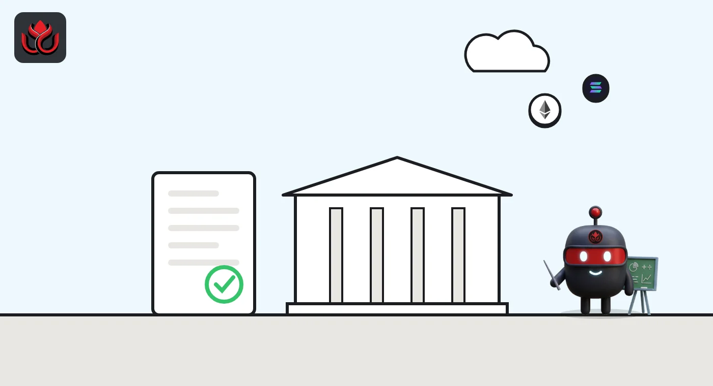

Hong Kong crypto licensing explained: SFC exchange rules, 2 of 36 stablecoin bids
In Hong Kong, crypto exchanges need a license from the Securities and Futures Commission, and anyone issuing a fiat-backed stablecoin needs one from the Hong Kong Monetary Authority. Only two stablecoin issuers had been licensed as of April 2026: HSBC and Anchorpoint Financial.
Key points
- Crypto exchanges, called virtual asset trading platforms (VATPs), are licensed by the SFC under Part 5B of the Anti-Money Laundering and Counter-Terrorist Financing Ordinance, in force since June 1, 2023.
- Issuing a fiat-referenced stablecoin has been a licensed activity since the Stablecoins Ordinance (Cap. 656) took effect on August 1, 2025.
- The HKMA received 36 applications in its first stablecoin batch and licensed two issuers on April 10, 2026.
- Since 2025 the SFC has widened what licensed platforms can do, with circulars on shared liquidity, affiliated market makers and a framework for perpetual contracts.
Who regulates crypto in Hong Kong?
Two regulators split the work. The Securities and Futures Commission (SFC) licenses and supervises crypto trading platforms and other intermediaries. The Hong Kong Monetary Authority (HKMA), the city's de facto central bank, licenses stablecoin issuers and supervises banks' crypto activities.
A virtual asset trading platform, or VATP, is the SFC's term for a centralized crypto exchange that matches buyers and sellers and holds client assets. The rules for these platforms sit in Part 5B of the Anti-Money Laundering and Counter-Terrorist Financing Ordinance (AMLO). The SFC's disciplinary fining guidelines for that part of the law date from June 1, 2023, according to the list of documents on the SFC's virtual asset page.
How does a crypto exchange get licensed?
The SFC set out its requirements for platform operators in consultation conclusions published on May 23, 2023, after a consultation launched that February. Platforms already serving Hong Kong had a transition period. The SFC issued a statement on the end of the non-contravention period on May 28, 2024, and reminded the market on March 1, 2024, that the window to apply under the transitional arrangements had closed, its document list shows.
The licensing process itself has changed twice. On December 18, 2024, the SFC announced it was licensing platforms under a swifter process, and on January 16, 2025, it issued a circular on an enhanced licensing process and revamped external assessments for new applicants. On the same day, it published findings from inspections of applicants and the standards of conduct it expects.
The pressure to license came partly from scandal. In September 2023 the SFC issued a statement on JPEX, an unlicensed platform, and a warning about unregulated trading platforms.

What can licensed platforms offer?
The menu has grown since 2025, according to SFC circulars listed on its virtual asset page:
- August 15, 2025: a circular to licensed platforms on custody of virtual assets.
- November 3, 2025: circulars on expanding platforms' products and services, and on shared liquidity, meaning order books that a licensed platform shares with others.
- February 11, 2026: permission to accept affiliated market makers, and a high-level framework for perpetual contracts, a type of futures contract with no expiry date.
- April 20, 2026: circulars on tokenizing SFC-authorized investment products and on their secondary trading.
The tokenization work is already live. In October the SFC approved 24/7 trading of tokenized money market funds on a licensed platform, as LC Insight reported.
How does Hong Kong regulate stablecoins?
Issuing a fiat-referenced stablecoin in Hong Kong is a regulated activity that needs an HKMA license under the Stablecoins Ordinance (Cap. 656), which took effect on August 1, 2025, according to the HKMA's stablecoin page. A fiat-referenced stablecoin is a token meant to track a currency such as the Hong Kong dollar.
On April 10, 2026, the HKMA granted the first two licenses, to Anchorpoint Financial Limited and The Hongkong and Shanghai Banking Corporation Limited, effective that day, the HKMA said. Chief Executive Eddie Yue called it "an important milestone for the development of digital assets in Hong Kong."
In a blog post the same day, Yue said the HKMA had received 36 applications in the first batch, which closed on September 30, 2025. He said the bar "will remain high" and that any further licenses would be very limited in number, with no set timing. The HKMA's stablecoin page, last revised July 13, 2026, listed no later licensing announcement. Licensed issuers must manage and safeguard reserve assets, run redemption arrangements and verify holders' identities. The first coins will reference the Hong Kong dollar, and launches were expected in the middle to second half of 2026.
Hong Kong stablecoin licensing, first batch
applications or licenses
Source: HKMA, Insight, April 10, 2026.
What will Hong Kong stablecoins be used for?
The HKMA has given a fairly specific answer. In his April 10 blog post, Eddie Yue listed the planned uses of the first licensed coins:
- cross-border payments;
- local payments;
- trading of tokenized assets;
- new uses that rely on programmable money, such as conditional payments and supply chain financing.
Issuers plan to explore overseas markets and other fiat currencies later, subject to conditions. Before launch, each issuer must finish technology testing, put its risk controls in place and hire staff. After launch, the HKMA said it will supervise them through on-site examinations, off-site reviews, independent assessments and meetings with senior management.
Licensed issuers must also run anti-money laundering controls, including blockchain analytics to spot suspicious transactions, and check the identity of stablecoin holders directly or through reliable third parties.
Can banks and brokers offer stablecoins?
Yes, within limits. On May 27, 2026, the HKMA and the SFC issued a joint circular on banks' dealing, advice and fund management in "Relevant Stablecoins," meaning coins licensed under the Stablecoins Ordinance. Unlicensed stablecoins are not covered.
Banks may partner with SFC-licensed platforms or HKMA-licensed issuers. Retail clients may trade only tokens that a platform has admitted for retail trading. Products tied to licensed stablecoins are not presumed to be complex, so some investor tests are relaxed. Banks must still disclose how each coin keeps its value and how redemption works. The SFC issued a matching circular for licensed brokers the same day.
Can ordinary investors get crypto exposure through funds?
Yes, through funds the SFC has authorized. The SFC has issued circulars on SFC-authorized funds with exposure to virtual assets, first on December 22, 2023, and again on May 27, 2026, according to its document list. On December 22, 2023, it also issued a joint circular with the HKMA on intermediaries' virtual asset activities, which sets the rules for brokers and banks that deal in or advise on crypto.
Tokenized versions of authorized funds are another route. The SFC's April 20, 2026, circulars cover both creating tokenized investment products and trading them on secondary markets.
What are the risks for users?
A license is not a guarantee. It means a platform has to meet the SFC's rules on custody, conduct and anti-money laundering, and that the regulator can inspect and discipline it. Coins can still lose value, and platforms can still fail or be hacked.
The bigger risk is using an unlicensed platform, where none of those protections apply. The SFC's JPEX statement in 2023 was a reminder of what can happen when a platform operates outside the rules.
LC Insight analysis
This section is our reading of the facts above, not a statement of fact.
- We think Hong Kong's model is gatekeeping first, growth second. Two stablecoin licenses out of 36 applications shows how high the HKMA has set the bar.
- The likely next battleground is products. Shared order books, perpetuals and tokenized funds suggest the SFC wants licensed platforms to compete with offshore exchanges on depth and range, not just on safety.
- The real test for stablecoins is use. Licensed Hong Kong dollar coins still have to find buyers and payment uses after launch.
What's next
- Launch dates for the first licensed Hong Kong dollar stablecoins
- Any further stablecoin licenses from the HKMA
- The first perpetual contracts on licensed platforms
Frequently asked questions
Who licenses crypto exchanges in Hong Kong?
The Securities and Futures Commission, under Part 5B of the Anti-Money Laundering and Counter-Terrorist Financing Ordinance.
Who licenses stablecoin issuers in Hong Kong?
The Hong Kong Monetary Authority, under the Stablecoins Ordinance (Cap. 656), in force since August 1, 2025.
Which companies have Hong Kong stablecoin licenses?
As of the HKMA's April 10, 2026, announcement, Anchorpoint Financial Limited and The Hongkong and Shanghai Banking Corporation Limited.
Can Hong Kong platforms offer perpetual futures?
The SFC published a high-level framework for perpetual contracts offered by licensed platforms on February 11, 2026.
Disclaimer. This article is based on public information and the sources listed below as of the update time shown. It is for information only and is not investment, legal or tax advice. Figures may change as companies and authorities publish new data.
Sources
- SFC, virtual asset trading platform operators: other useful materials (list of circulars and statements)
- HKMA, Regulatory Regime for Stablecoin Issuers
- HKMA, Granting of stablecoin issuer licences (April 10, 2026)
- HKMA Insight, Eddie Yue on the regulated stablecoin ecosystem (April 10, 2026)
- HKMA and SFC, joint circular on Relevant Stablecoin activities (May 27, 2026)